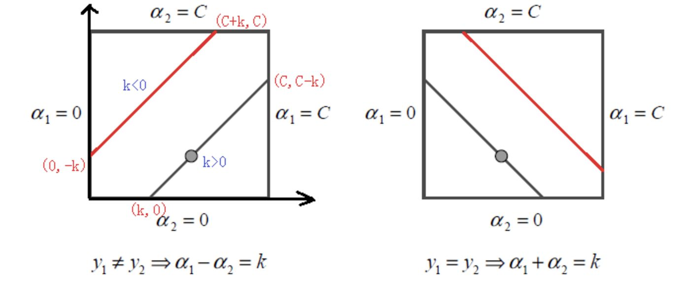

机器学习 06：SMO 算法
概述
$SMO$ 是由 $Platt$ 在 1998 年提出的、针对软间隔最大化 $SVM$ 对偶问题求解的一个算法，其基本思想很简单：如果所有变量的解都满足此优化问题的 KKT 条件，则这个优化问题的解就得到了；否则在每一步优化中，挑选出诸多参数 $\alpha_k\ (k=1,2,\cdots,n)$ 中的两个参数 $\alpha_i,\alpha_j$ 作为变量，其余参数都视为常数，问题就变成了类似于二次方程求最大值的问题，从而我们就能求出解析解，这两个变量中，一个是违反 KKT 条件最严重的那一个，另一个由约束条件自动确定一个。
选择变量的启发式方法
先来回顾一下 $SVM$ 中的优化目标函数：
由于要满足约束 $\sum\limits_{i=1}^N\alpha_iy_i=0$，所以每次需要选取两个 $\alpha_i$ 做为变量，这一点与坐标上升法不同。
要使优化目标函数有解，我们需要使其满足 $KKT$ 条件中的互补松弛：
根据上面的条件我们可以得出：
由于 $\vec w=\sum\limits^N_{j=1}\alpha_jy_j\phi(\vec x_j)$，我们令
则可以推出以下三个条件：
选择第一个变量
在 $SMO$ 中，我们称第一个变量为外循环。外循环取的是样本中违反 $KKT$ 条件最严重的点。
我们可以借助上面推出的条件来度量一个点违反 $KKT$ 条件的程度，具体来说，我们定义三份“差异向量”
其中第 $k$ 个向量对应着第 $k$ 个条件。对于不同的条件，我们按不同方式将对应向量的某些位置置为 0。
第一个条件：$\alpha_i=0\Rightarrow c_i^{(1)}\ge0$ 若满足：
- $\alpha_i>0$ 且 $c_i^{(1)}\le0$
- $\alpha_i=0$ 且 $c_i^{(1)}\ge0$
第二个条件：$0\le\alpha_i\le C\Rightarrow c_i^{(2)}=0$ 若满足：
- $\alpha_i=0$ 或 $\alpha_i=C$ 且 $c_i^{(2)}\ne0$
- $0\le\alpha_i\le C$ 且 $c_i^{(2)}=0$
第三个条件：$\alpha_i=C\Rightarrow c_i^{(3)}\le0$
- $\alpha_i< C$ 且 $c_i^{(3)}\ge0$
- $\alpha_i=C$ 且 $c_i^{(3)}\le0$
最后只需要将这三个差异向量的平方相加作为“损失”，从而直接选出损失最大的 $\alpha_i$ 作为外循环即可。
选择第二个变量
第二个变量成为内循环，只需要简单的随机选取一个即可。
取出这两个变量之后，把其它变量看做常数，这样优化目标函数就变成了带约束的二次规划问题。
目标函数的优化
假设选择的两个变量是 $\alpha_1,\alpha_2$，把其它的 $\alpha_i$ 都看作常数。定义 $K_{ij}=K(\vec x_i,\vec x_j)$ 那么原先的优化目标函数就成了：
无约束求极值
我们先暂时不管约束条件 $0\le\alpha_i\le C,i=1,2$，通过 $\alpha_1=(C-\alpha_2y_2)y_1$ 可以将目标函数替换成单变量形式：
我们设更新前的值为 $\alpha_i^{old}$, 更新后的值为 $\alpha_i^{new}$，对目标函数进行一个偏导的求：
因为 SVM 中数据点的预测值为：$f(\vec x_j)=\sum\limits^N_{i=1}\alpha_iy_iK(\vec x_i,\vec x_j)+b$ 因此有：
- $\sum\limits^N_{i=3}\alpha_iy_iK_{1,i}=f(\vec x_1)-\alpha_1^{new}y_1K_{1,1}-\alpha_2^{new}y_2K_{1,2}-b$
- $\sum\limits^N_{i=3}\alpha_iy_iK_{2,i}=f(\vec x_2)-\alpha_1^{new}y_1K_{1,2}-\alpha_2^{new}y_2K_{2,2}-b$
另有：$C=\alpha_1^{old}y_1+\alpha_2^{old}y_2$
将上面三个式子带入偏导中并化简得：
设 $\eta=K_{1,1}+K_{2,2}-2K_{1,2}$，则有：
这样我们就求出了这两个变量在无约束情况下的解析解。
加入约束
当 $y_1\ne y_2$ 时，线性限制条件可以写成：$\alpha_1-\alpha_2=k$，根据 $k$ 的正负可以得到不同的上下界，可以统一表示为：
- 下界：$L=\max(0,\alpha_2-\alpha_1)$
- 上界：$H=\min(C,C+\alpha_2-\alpha_1)$
当 $y_1=y_2$ 时，限制条件可以写成：$\alpha_1+\alpha_2=k$，此时上下界可以统一为：
- 下界：$L=max(0,\alpha_1+\alpha_2-C)$
- 上界：$H=min(C,\alpha_1+\alpha_2)$
由此可知，此约束为方形约束，下图为它的限制区域。

根据得到的上下界，我们可知加入约束后的 $\alpha_2^{new}$ 为：
这样就实现了对 $\alpha_i,\alpha_j$ 的更新。
更新阈值 b
每次更新完一对 $\alpha_i,\alpha_j$ 之后都需要重新计算阈值 $b$，因为它关系到 $f(\vec x)$ 的计算和优化时误差 $E_i$ 的计算。
当 $0<alpha_1^{new}<C$，根据 $KKT$ 条件可知相应的数据点为支持向量，满足 $y_1(w^T+b)=1$，两边同时乘 $y_1$ 得：$\sum\limits^N_{i=1}\alpha_iy_iK_{i,1}+b=y_1$，因此 $b_1^{new}$ 的值为：
其中，$y1-\sum\limits^N_{i=3}\alpha_iy_iK_{i,1}=-E_1+\alpha_1^{old}y_1K_{1,1}+\alpha_2^{old}y_2K_{2,1}+b^{old}$
当 $0<\alpha_2^{new}<C$ 时：
当 $b_1,b_2$ 都有效时他们是相等的，即 $b^{new}=b_1^{new}=b_2^{new}$
当 $\alpha_1,\alpha_2$ 都在边界上，且 $L\ne H$ 时，选择它们的中点作为新的阈值：$b^{new}=\frac{b_1^{new}+b_2^{new}}2$